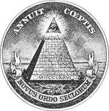
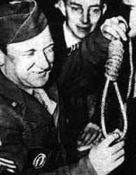
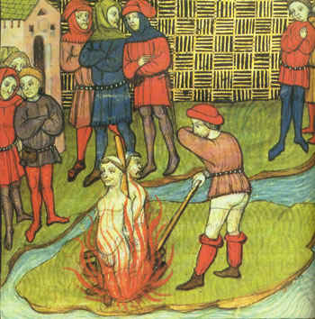
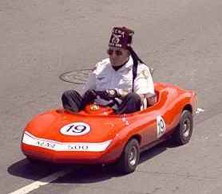
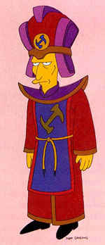
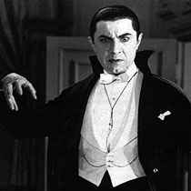
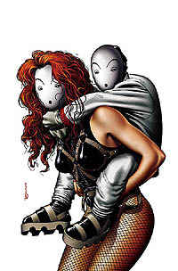
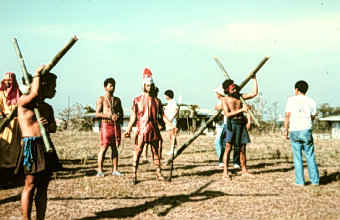

|
Secret Societies For centuries, humans have been trying to keep information from other humans. Paradoxically, many have come to the conclusion that the best way to keep a secret is to tell it to a bunch of other people and then swear them all to secrecy.When this effort is unsuccessful, we call the result a "secret society." When the effort is successful, we don't call the result anything, because we plebians never hear about the effort to begin with. In short, the society part is easy. The secret part is hard. Nevertheless, secret societies have become deeply embedded in the zeitgeist. In some cases, their secrets are so poorly kept that a quick run through Google will yield nearly anything you could possibly want to know. In other cases, the society manages to keep some of its secrets secret, but the group itself becomes known to a greater or lesser extent. There are many different ways to structure a secret society, but there are a few specific models which recur fairly often. In order to qualify as a secret society, a group generally has to be based around initiation rituals, degrees of authority and dramatic oaths of silence. Most groups can arguably be included in more than one of the categories which follow, and probably all of them can be included under the final heading:
Political Many people look at the state of the world and come to the understandable conclusion that they must be missing something. After all, no rational person would make the decisions some world leaders make... unless, of course, they have a hidden agenda that we don't know about.
Many people look at the state of the world and come to the understandable conclusion that they must be missing something. After all, no rational person would make the decisions some world leaders make... unless, of course, they have a hidden agenda that we don't know about. So whose agenda is it, anyway? Some favorite contenders include:
 The Carbonari in Italy, a derivative of the Masons, helped forment revolution in the 19th century. Edelweiss, a European group, advanced a pro-Nordic racial agenda and produced such illustrious members as Hermann Goering. Thule Gelleschaft, an occultish group of the day, reputedly inspired Hitler to adopt the swastika as the Nazi emblem. A Russian group, Land and Liberty, used terrorism and assassination to lay the groundwork for revolution. Formally known as the Fists of Righteous Harmony, the Boxers began as a small Chinese nationalist society toward the end of the 19th century before swelling to incredible size, embarking on a reign of terror against foreigners and subsequently getting slaughtered by the U.S. Navy. There's plenty of evidence to show that secret societies have formed to accomplish specific political goals, but those groups that don't get killed in the process tend to fade away after the immediate political crisis is resolved. The idea that a secret society might be running the world can be appealing. It offers the possibility that every stupid, pointless thing done by world leaders might actually be smart and pointful, part of some sort of plan. However, it doesn't take much live experience to realize that individual people are generally stupid and pointless, and Occam's Razor tells us the simplest explanation is most often correct.
The Octopus was first tenatively identified by a freelance investigative reporter named Danny Casolaro, who believed it linked such conspiracies as Iran-Contra, BCCI, INSLAW to such government agencies as the CIA, FBI and the NSA. Casolaro turned up dead due to an extremely suspicious "suicide" in 1991. His story (or rather, a wildly imaginative telling of his story) has made him a martyr to the conspiracy crowd. Some political secret societies eventually metamorphose into criminal organizations, such as the Mafia, the Japanese Yakuza and the Chinese Triads. You can also make a case that race-based hate groups like the Ku Klux Klan were also working from a political mindset, at least in their formative years.
ReligiousMany secret societies have a religious or occult component, but some are very explicitly devoted to advancing one form of religion or another. Religious secret societies are very real, and they have often had a tremendous impact on history, which explains why you've probably heard of a few:
In order to counter heretical groups, the Catholic Church has created its own secret orders from time to time, under auspices of the pope. The Templars originated as such an officially sanctioned group, but they fell out of favor when their wealth and power challenged the political status quo.  Envy and fear led to charges of witchcraft and other wrongdoing, and the Church eventually exterminated the order... or did they? These days, you can't swing a dead cat without hitting some group that claims to be a continuation or an offshoot of the Templars. The history of Islam is also riddled with secretive groups which have had an incalcuable effect on history, from the Assassins of the 11th Century to al Qaeda in the present day. One reason these groups are so effective is their embrace of violence, paired with a complete disregard for the personal safety of their members. The Assassins and the Templars were rumored to have shared trade secrets and engaged in other covert alliances. The list of religious secret societies goes on and on. Buddhists got into the act, with organizations like the White Lotus Groups (of which the Boxers were technically a part), and variations sprouted among Hindus and Jews as well. Africa has been rife with secret societies of all sorts, many of which are based in the rituals of shamanistic tribal religions. An outgrowth of African spiritual beliefs, Voudoun was intimately linked with Hatian secret societies, many of which are political in nature. An American variation on the theme, Santeria, is practically a secret society in itself. You will be the hit of the cocktail party when you hold forth on the origins of the word "Mumbo Jumbo," which is a botched transliteration of the name of a Mandingo secret society. The account originated with the 18th century explorer of Africa Francis Moore, who wrote that the all-male society, bound by terrible oaths, existed primarily to adjudicate disputes between men and women... in favor of men. So how did Moore find out about this "secret" group?
About the year 1727, the king of Jagra having a very inquisitive woman to his wife, was so weak as to disclose to her this secret; and she being a gossip, revealed it to some other women of her acquaintance. This at last coming to the ears of some who were no friends to the king, they, dreading lest if the affair took vent, it should put a period to the subjection of their wives, took the coat, put a man into it, and going to the king's town, sent for him out, and taxed him with it: when he not denying it, they sent for his wife, and killed them both on the spot. Thus the poor king died for his complaisance to his wife, and she for her curiosity. The first rule of Mumbo Jumbo is DON'T TALK ABOUT MUMBO JUMBO!
FraternalSome people are attracted to the bizarre rituals and self-important playtime of a secret organization without necessarily wanting the responsibility of ruling the world or protecting the arcane keys of occult power. For those who just want to play at global conspiracy, there are a number of options ranging from the ridiculous to the... well, also ridiculous.
All of these groups are basically clubs for silly boys, to a greater or lesser extent. They are based around "lodges," a word nicked from Masonic practice which means, in this context, a place you go to get drunk in the company of men. Most of these groups feature some sort of thinly veiled homoerotic bondage play as a form of initiation. Generally, these groups are all male, all the time, though some have women's auxiliary groups and others have been forced by American law to open their doors to all comers. Most fraternal organizations require you to pay dues, which entitles you to use of the bar. Fraternal clubs often perform charity work in a vain effort to justify their existence. They can also provide business networking opportunities for those who are insufficiently ambitious to hook up with the Masons, or even better, the Trilateral Commission.
Fictional Most secret societies have a fictional history, concocted to make them look important. Some groups are more fictional than others, however.
Many authors have discovered that once you create a secret society with a sufficiently intriguing premise, people will automatically assume it's based on something real. If the author tries to deny it later, well, that just means someone got to them. The Illuminati are technically not fictional, but so many fictional things have been written about them that they might as well be. In addition to many earnest flights of fancy composed by the slightly deranged, the Illuminati got the most ink in the famous Illuminatus! trilogy written by Robert Anton Wilson. Illuminatus! was so successful that many of its yarns are now taken as gospel truth by such illustrious conspiratorial minds as David Icke. H.P. Lovecraft created a fictional cult known as Cthulhu, which he shared with several other horror writers of the day. The cult was based around a series of shapeless, nameless, writhing monstrosities and an entirely mythical grimoire known as the Necronomicon. Lovecraft tried to explain that he had made the whole thing up, but (as extensively documented elsewhere in the Rotten Library) people are frequently found to be stupid or insane, and you don't have to look very far to find some idiot trying to conjure up a Shoggoth.   There was an 18th century Italian secret society called The Invisibles, but the name was adopted by comic book auteur Grant Morrison for a 1994-2000 comic book series which set out with the goal of making The Invisibles real. If someone hands you a blank badge, you'll know Morrison's quest succeeded. Other notable fictional secret societies include the Talamasca (a vampire-hunting group of scholars in Anne Rice's books), the Clandestine Watchers Council (a vampire-hunting group of scholars in Buffy the Vampire Slayer), the E-Branch (a vampire-hunting group of secret agents in Brian Lumley's Necroscope books), and the Millennium Group (an apocalyptic organization inexplicably unconcerned with vampire hunting, and the brainchild of X-Files creator Chris Carter).
InsaneBetween the paddling and the dreams of world domination, any given secret society is going to attract a certain element of the deranged. Some groups are way out there... even relative to other secret societies.
Nevertheless, the Klan was rooted in bizarre behavior. The original group dressed in white hoods and pretended to be ghosts in order to frighten freed slaves. Subsequent iterations were not much more sophisticated and today the Klan is populated with fringe personalities with too much time on their hands. The Klan also had its sworn enemies, such as the memorably named Order of Anti-Poke-Noses, which formed to oppose "any organization that attends to everyone's business but their own." The bad guys outlived these intrepid crusaders, however. Strange behavior hardly begins and ends with the Klan. A quick browse through the pages of The International Encyclopedia of Secret Societies and Fraternal Orders by Alan Axelrod yields up a smorgasbord of strangeness. Fils d'Adam is an au courant French secret society devoted to the joys of similating necrophilia and performing actual bestiality on some extremely loosely contrived premise having to do with Original Sin. The Abecadarians, also French, formed to battle the insidious evil of the printing press during the 15th century. The theory was that ignorance is divinely mandated and that everyone should strive to the pinnacle of ignorance of everything, including the letters of the alphabet—thus their name comes from A-B-C-D... Clever, you might think, until you realize that anyone who knows the group's name now knows the first four letters of the alphabet and therefore can no longer be saved. (The doctrine was later supposedly adopted by the Illuminati.) (The real ones.) The Society of Goats in 18th century Germany wore goat masks in order to frighten the local peasantry and accomplish various acts of crime. (And people think Batman is implausible.) Their initiation involved riding a wooden goat rigged up approximately in the manner of a mechanical bull. The goat itself may also have been a Baphomet-style symbol of Satan. They were eventually exterminated by the local authorities, and bore no relation to the even stranger Order of Pink Goats, which arose in the 20th century.  The Hermanos Penitentes were originally a European order which enjoyed self-flagellation. They celebrated Good Friday each year by crucifying one of the sect's members, though the lucky victim was removed from the cross before dying. Despite being the recipient of a papal censure, the group not only survived, but continues its tradition of crucifixion, much to the bemusement of the occasional newspaper feature writer who stumbles across the event. The Concatenated Order of Hoo-Hoo... well, OK, the Hoo-Hoos were largely just kidding around. The members were lumberjacks and people whose jobs related in some vague manner related to lumber. Many of their titles and rituals were based on Lewis Carroll's Jabberwocky. Amazingly, the organization continues to day under a different name, despite what Darwin's theories would suggest.
|
 Nevertheless, people will talk. If all the above secret societies aren't enough to satisfy your paranoid tendencies, you can always look into "The Octopus"—an uber-secret society which purportedly links all of the other secret societies in one vast conspiracy to control the world.
Nevertheless, people will talk. If all the above secret societies aren't enough to satisfy your paranoid tendencies, you can always look into "The Octopus"—an uber-secret society which purportedly links all of the other secret societies in one vast conspiracy to control the world. The Ku Klux Klan originated as a politcal white supremacy group in 1886. At the time, it was not that far out of the political mainsteam. Racism was rampant after the Civil War, and many people resented the North's exploitation of the South.
The Ku Klux Klan originated as a politcal white supremacy group in 1886. At the time, it was not that far out of the political mainsteam. Racism was rampant after the Civil War, and many people resented the North's exploitation of the South.